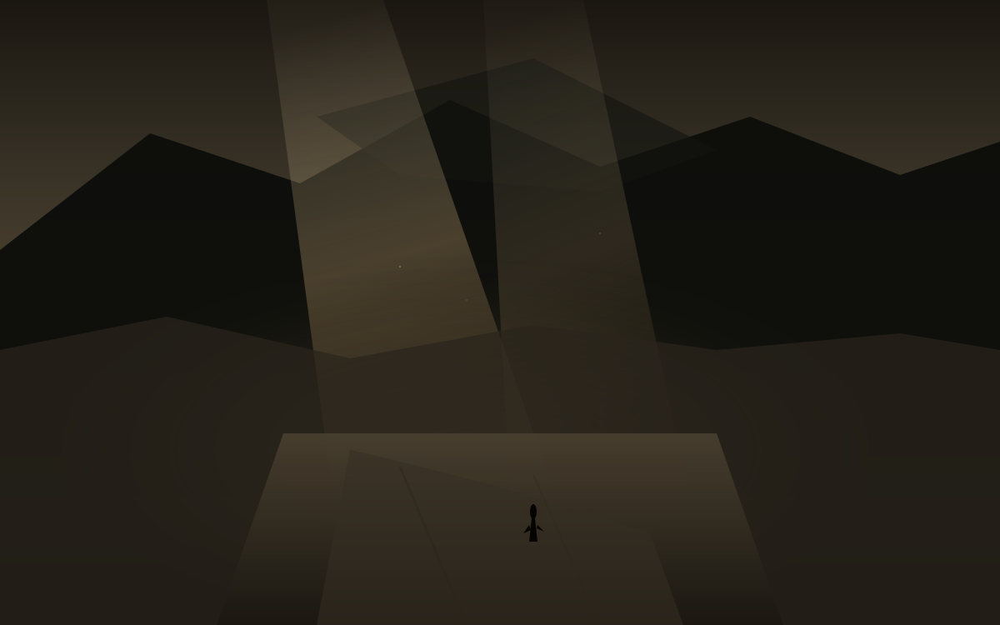

回
夜里十点二十
今天是星期一，日历上写着10月19日。冷空气过了两天，气压还在，但光开始从云隙里回来。账户里价也开始从周五的低点往回走一点，同一天撞上西安的夜。这篇落笔是夜里22点20。对美东是上午10点20，现金盘开着，能写进余温的，是已经收过的周五数，和正在走的周一方向。孩子一岁多，他不认星期一，只认楼道灯什么时候亮，什么时候该睡觉。散打馆开着，有人在垫子上出拳，铁皮屋顶有风声，没有雨声。啤酒吧和游戏机仍停在计划里，没有地址，没有开业日，不提前写成店。
西安今晚预报大体对齐。白天多云转晴，最高约16到19，最低约11到12。微风，空气质量还行。今夜约10到12度，云薄，光能透。月还没圆。冷是过了的，回是还在走的。
世界的回
法国周末生活成本抗议演变成近年最严重的骚乱。全国约55万人上街，巴黎约11万。周六冲突中超2400人被捕，近千名警察受伤。Limoges十九世纪市政厅被焚，屋顶坍塌。巴黎、马赛、里昂等多地店铺被抢、窗户被砸。马克龙周日晚全国讲话，称“我们都感到愤怒与羞耻”，谴责“肆无忌惮的暴力”，称地方当局必要时可禁止集会。他拒绝内政部长辞职，要求改进安保方法。周一学生继续行动，卢浮宫入口被封锁，示威者称“我们为封锁世界最大的博物馆而自豪”。回是从街头暴力回到讲话和禁令的，不是回到平静的。
俄乌能源打击未停。泽连斯基称未收到伙伴事先警告，俄方空袭切断数十万户电力。特朗普政府与泽连斯基关系持续紧张，卫星通讯和情报分享有过争执。回是打击还在继续的，不是停火已经落地的。美国中期选举还有十五天，油价高位，通胀热。回是市场从周五科技重挫里往回走一点的，不是已经回到高点的。
美股周一开盘科技反弹。纳指从前周最差周以来回升约1%，标普约0.5%，道指小跌。芯片股领涨。AVGO周五收328.75，跌4.5%，相对成本419.78浮亏约21.7%。周一盘中回至约334到336，涨约1.7%到2%。80股，成本大约三万三千多。黄仁勋说AI市场震荡“这一切都会过去”。过去是还在等的，回是正在走的。
西安的回
冷空气过了关中。周六小到中雨转阴，阵风6到7级，温度掉得快。周日阴，10到17度。今天多云转晴，高约16到19，低约11到12，微风。城墙边空气质量还好，湿气散了一些。孩子一岁多，晚上加一件薄外套。散打馆的铁皮屋顶有风声，拳声清楚一点。农场仍停在冬末，种子还在土里，不提前写成已经发芽。
仓里AVGO从成本419.78走到周五328.75，浮亏二十一个点。周一盘中回到334附近，仍深亏。80股没有动。其他仓也在跟着走，但余温只记已经核过的收盘，和正在走的方向。IFRA还在待核，不编数。决定之后的第三十三天，冷之后的第一回。回不是结束，是光还在从云隙里回来，价还在从低点往回走一点。
留下的
体积光从云隙斜切脏土路，暖褐灰打在辙痕和枯草上。远山被光撕开一条缝。路从画面中段弯向光的方向，辙痕深，不是回头的路。小人物走在路中后段，轮廓薄，面朝光，不是回望。回是路上的，不是已经到了的。
星期一的夜，西安的云薄了，风还在。孩子已经睡了。馆还开着。计划还在计划里。仓还在仓里。世界还在走。余温记下今天已经收过的数，和还没收过的方向。
回是还在走的。不是已经回到的。